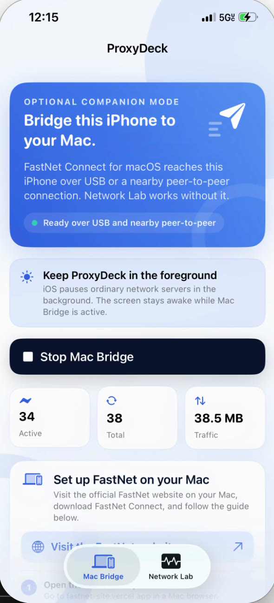
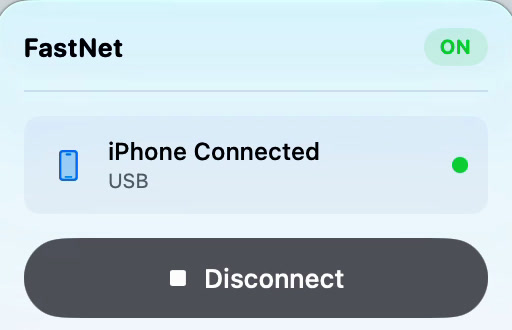
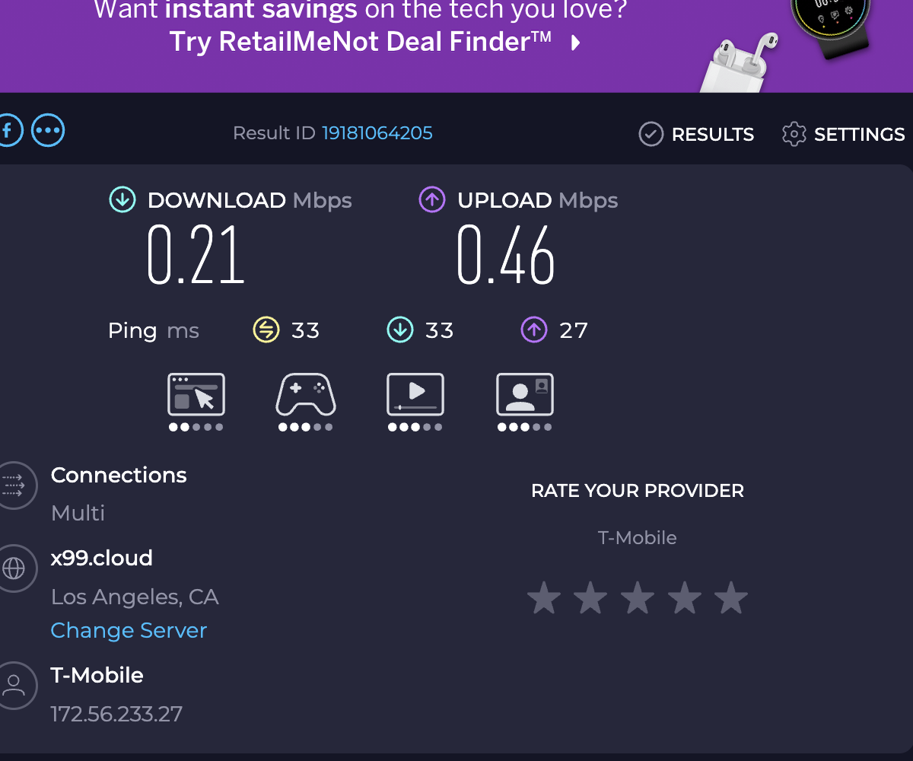
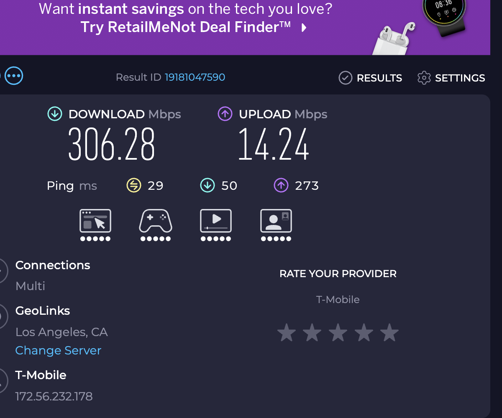

For Mac + iPhone
iPhone fast.
Mac hotspot slow?
Put your Mac online through your iPhone's regular phone data instead of the capped hotspot allowance, over USB or nearby Wi-Fi. Any carrier. No jailbreak.
Two apps work together: FastNet Connect on your Mac (free for your first 2 hours connected, then $29 one-time with a 30-day refund) and ProxyDeck on your iPhone (free on the App Store). No card or email for the trial. Apple Silicon, macOS 13+, iOS 16+.


Keep ProxyDeck open on your iPhone while connected. Mac Bridge stops when the app leaves the foreground. Installing the free iPhone app alone does not connect your Mac. On a Windows PC? FastNet is Mac-only today: get an email if the Windows version ships.
Measured, not promised
Same SIM, a minute apart.
0.21Mbps

306Mbps

Real Speedtest results — same T-Mobile SIM, taken back-to-back. Your speeds depend on signal, plan, and device.
84 seconds
Watch the setup, start to finish.
Setup
Two apps. One connection.
On your iPhone right now? Install ProxyDeck, then open fastnet-site.vercel.app on your Mac for step 2. The Mac installer cannot run on an iPhone.
-
Install ProxyDeck on your iPhone
The App Store name is ProxyDeck — Network Lab. It is free. Network Lab works independently; FastNet Connect uses its optional Mac Bridge mode.
Install ProxyDeck — FreeiOS 16+. Network Lab also works without a Mac.
-
Install FastNet Connect on your Mac
On an Apple Silicon Mac with macOS 13+, download and open FastNet.pkg. It runs without a license for your first 2 hours of connected time, so you can check it on your carrier before paying. After that, a $29 one-time Mac license keeps it running. Already purchased? Paste your license key in the FastNet menu.
Download for Mac — free trialFor macOS only, not iPhone. No card or email needed for the trial.
-
Start Mac Bridge and connect
Open ProxyDeck, select Mac Bridge, and tap Start Mac Bridge. Keep ProxyDeck in the foreground, then connect from FastNet Connect over USB or nearby peer-to-peer Wi-Fi.
Why FastNet
Unlimited & full speed
Uses your phone's data, not hotspot allowance. No throttling, no data caps.
Private & secure
All traffic stays local between your devices. No cloud servers, no accounts, no data collection.
One click
No terminal commands, no config files. Connect over USB or Wi-Fi and click once — all your Mac's traffic is routed automatically.
Pay once
One-time purchase. No subscription. Stop paying $10-25/month extra for hotspot data you already have.
Pricing
One price. No subscription.
- FastNet Connect Mac app
- Free ProxyDeck iPhone app from the App Store
- Pair over USB or nearby peer-to-peer Wi-Fi
- One-click connect — routes all traffic
- Works with any carrier, not only US ones
- No jailbreak required
- Lifetime updates
- Email support
FastNet Connect for Mac
$29
one-time payment · lifetime updates · 30-day refund
Buy FastNet — $29Not sure yet? Try it free for 2 hours of connected time first.
Instant download after checkout · license key delivered on the spot.
macOS 13+ (Apple Silicon) · iPhone with iOS 16+ · USB or Wi-Fi. Already have a license? Go to the Mac download and setup.
FastNet for Windows?
FastNet runs on Mac only today. We are deciding whether to build a Windows version, and the number of people who ask is what decides it. Leave your email and we'll send one message if it ships. Nothing else.
Your email app should have opened with a pre-filled message. Hit send and you're on the list. If nothing opened, email pjiang726@gmail.com directly.
FAQ
Why does the App Store say ProxyDeck instead of FastNet?
They are the two apps used together for Mac Bridge: ProxyDeck — Network Lab is the free iPhone app, and FastNet Connect is the $29 Mac app. ProxyDeck also includes standalone network diagnostics that need no Mac or purchase. Its optional Mac Bridge connects to FastNet Connect only while ProxyDeck remains in the foreground.
How does this work?
Carriers track hotspot usage separately from phone data. FastNet Connect routes your Mac's traffic through ProxyDeck's optional Mac Bridge — over USB or nearby peer-to-peer Wi-Fi. To the carrier, it looks like regular phone data, so it uses your unlimited phone data instead of your limited hotspot allowance.
How is this different from PDANet+?
PDANet+ pioneered this approach years ago and still works for some users. The differences: FastNet Connect is a native macOS menu bar app, ProxyDeck is built for modern iOS, and the setup requires no terminal or manual proxy configuration. If PDANet+ already works for you, no need to switch. Where PdaNet+ stands on iPhone and Mac today.
Is FastNet a PairVPN alternative for iPhone and Mac?
Yes, for the specific job of getting a Mac online through a nearby iPhone. PairVPN's iOS app was removed from the App Store in October 2026 and its Android build has not been updated since 2023. FastNet Connect pairs with ProxyDeck over USB or nearby Wi-Fi, with a $29 one-time Mac license and a foreground-only iPhone app. It does not replace PairVPN's remote home-network access or its Windows and Android clients. What happened to PairVPN, and what changes if you switch.
Why pay $29 if I can do this with iproxy + a SOCKS5 server?
You can. iproxy 1082 1082 plus a SOCKS5 server on iPhone is the same idea, free, and well-documented. FastNet is for people who want it to just work without terminal commands, manual port forwarding, or remembering to set the system proxy each time. If you're comfortable in terminal and only need it occasionally, the manual setup is fine.
Will this be detected by my carrier?
Tethering detection usually relies on TTL inspection, User-Agent fingerprinting, and DNS heuristics. Because ProxyDeck's Mac Bridge uses the phone's TCP stack, traffic originates from the same network stack as other iPhone apps. No tool guarantees invisibility, and carriers may still infer usage from traffic patterns.
What speeds can I expect?
Lightning-port iPhones cap around 280–320 Mbps because Lightning is USB 2.0. USB-C iPhones (15 Pro and later) can push gigabit if your cellular signal supports it. Real-world speeds depend on tower congestion and signal strength.
Is this legal?
FastNet is a standard SOCKS5 proxy — the same technology used by millions of developers daily. How you use your cellular data is between you and your carrier. We recommend reviewing your carrier's terms of service.
USB or Wi-Fi — which should I use?
Either works. USB is a direct cable link between your Mac and iPhone: most reliable, lowest latency, and the phone charges while connected. Wi-Fi is a direct device-to-device link (like AirDrop) — no cable, and you don't need to be on any network, just have Wi-Fi on. Either way your Mac's traffic leaves the phone as ordinary phone data, not tethered hotspot data.
Does it work with my carrier, and outside the US?
FastNet does not depend on a particular carrier or country. Your Mac's traffic leaves the iPhone as ordinary phone data on whatever SIM is in it, which covers T-Mobile, Verizon, AT&T, Mint Mobile, Visible, and Cricket in the US as well as carriers elsewhere. It helps when your plan gives the hotspot less data or speed than the phone itself. If it does not work on your carrier, the 30-day refund applies.
What about Windows / Linux?
Mac only today. A Windows version depends on demand: leave your email and we'll write once if it ships. Linux is not planned yet.
Do I need to jailbreak my iPhone?
No. FastNet works on stock iOS 16+, no jailbreak needed.
Is my data safe?
Yes. Everything runs locally on your devices. FastNet has no servers, collects no data, and requires no account. Your traffic goes directly from Mac to iPhone to carrier — we never see it.
Is there a free trial?
Yes. FastNet Connect runs without a license for your first 2 hours of connected time, with no card or email. Only time your Mac is actually online through your iPhone counts. The app tells you 10 minutes before the trial runs out; after that it needs the $29 one-time license. ProxyDeck on the iPhone is free either way.
What if it doesn't work for me?
Try it before you pay: the free trial is there so you can check your carrier and setup first. If you buy and it still doesn't work out, there is a 30-day money-back guarantee, no questions asked. Email us at pjiang726@gmail.com.